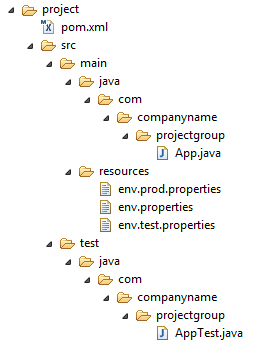
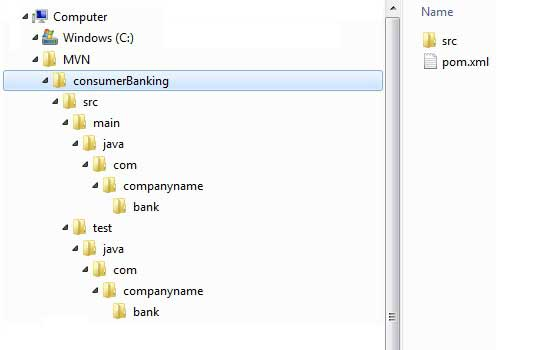

Maven Quick Guide
What is Maven?
Maven is a project management and comprehension tool. Maven provides developers a complete build lifecycle framework. Development team can automate the project's build infrastructure in almost no time as Maven uses a standard directory layout and a default build lifecycle.
In case of multiple development teams enviroment, Maven can set-up the way to work as per standards in a very short time. As most of the project setups are simple and reusable, Maven makes life of developer easy while creating reports, checks, build and testing automation setups.
Maven provides developers ways to manage following:
Builds
Documentation
Reporting
Dependencies
SCMs
Releases
Distribution
mailing list
To summarize, Maven simplifies and standardizes the project build process. It handles compilation, distribution, documentation, team collaboration and other tasks seamlessly. Maven increases reusablity and takes care of most of build related tasks.
Maven History
Maven was originally designed to simplify building processes in Jakarta Turbine project. There were several projects and each project contained slightly different ANT build files. JARs were checked into CVS.
Apache group then developed Maven which can build multiple projects together, publish projects information, deploy projects, share JARs across several projects and help in collaboration of teams.
Maven Objective
Maven primary goal is to provide developer
A comprehensive model for projects which is reusable, maintainable, and easier to comprehend.
plugins or tools that interact with this declarative model.
Maven project structure and contents are declared in an xml file, pom.xml referred as Project Object Model (POM), which is the fundamental unit of the entire Maven system. Refer to Maven POM section for more details.
Convention over Configuration
Maven uses Convention over Configuration which means developers are not required to create build process themselves.
Developers do not have to mention each and every configuration details. Maven provides sensible default behavior for projects. When a Maven project is created, Maven creates default project strcture. Developer is only required to place files accordingly and he/she need not to define any configuration in pom.xml.
As an example, following table shows the default values for project source code files, resource files and other configurations. Assuming, ${basedir} denotes the project location:
| Item | Default |
|---|---|
| source code | ${basedir}/src/main/java |
| resources | ${basedir}/src/main/resources |
| Tests | ${basedir}/target/classes |
| Complied byte code | ${basedir}/src/test |
| distributable JAR | ${basedir}/target |
Maven Environment Setup
Maven is Java based tool, so the very first requirement is to have JDK installed in your machine.
System Requirement
| JDK | 1.5 or above. |
|---|---|
| Memory | no minimum requirement. |
| Disk Space | no minimum requirement. |
| Operating System | no minimum requirement. |
Step 1 - verify Java installation in your machine
Now open console and execute the following java command.
| OS | Task | Command |
|---|---|---|
| Windows | Open Command Console | c:\> java -version |
| Linux | Open Command Terminal | $ java -version |
| Mac | Open Terminal | machine:~ joseph$ java -version |
Let's verify the output for all the operating systems:
| OS | Output |
|---|---|
| Windows |
java version "1.6.0_21" Java(TM) SE Runtime Environment (build 1.6.0_21-b07) Java HotSpot(TM) Client VM (build 17.0-b17, mixed mode, sharing) |
| Linux |
java version "1.6.0_21" Java(TM) SE Runtime Environment (build 1.6.0_21-b07) Java HotSpot(TM) Client VM (build 17.0-b17, mixed mode, sharing) |
| Mac |
java version "1.6.0_21" Java(TM) SE Runtime Environment (build 1.6.0_21-b07) Java HotSpot(TM)64-Bit Server VM (build 17.0-b17, mixed mode, sharing) |
If you do not have Java installed, install the Java Software Development Kit (SDK) from http://www.oracle.com/technetwork/java/javase/downloads/index.html. We are assuming Java 1.6.0_21 as installed version for this tutorial.
Step 2: Set JAVA environment
Set the JAVA_HOME environment variable to point to the base directory location where Java is installed on your machine. For example
| OS | Output |
|---|---|
| Windows | Set the environment variable JAVA_HOME to C:\Program Files\Java\jdk1.6.0_21 |
| Linux | export JAVA_HOME=/usr/local/java-current |
| Mac | export JAVA_HOME=/Library/Java/Home |
Append Java compiler location to System Path.
| OS | Output |
|---|---|
| Windows | Append the string ;C:\Program Files\Java\jdk1.6.0_21\bin to the end of the system variable, Path. |
| Linux | export PATH=$PATH:$JAVA_HOME/bin/ |
| Mac | not required |
Verify Java Installation using java -version command explained above.
Step 3: Download Maven archive
Download Maven 2.2.1 from http://maven.apache.org/download.html
| OS | Archive name |
|---|---|
| Windows | apache-maven-2.0.11-bin.zip |
| Linux | apache-maven-2.0.11-bin.tar.gz |
| Mac | apache-maven-2.0.11-bin.tar.gz |
Step 4: Extract the Maven archive
Extract the archive, to the directory you wish to install Maven 2.2.1. The subdirectory apache-maven-2.2.1 will be created from the archive.
| OS | Location (can be different based on your installation) |
|---|---|
| Windows | C:\Program Files\Apache Software Foundation\apache-maven-2.2.1 |
| Linux | /usr/local/apache-maven |
| Mac | /usr/local/apache-maven |
Step 5: Set Maven enviroment variables
Add M2_HOME, M2, MAVEN_OPTS to environment variables.
| OS | Output |
|---|---|
| Windows | Set the environment variables using system properties. M2_HOME=C:\Program Files\Apache Software Foundation\apache-maven-2.2.1 M2=%M2_HOME%\bin MAVEN_OPTS=-Xms256m -Xmx512m |
| Linux | Open command terminal and set environment variables. export M2_HOME=/usr/local/apache-maven/apache-maven-2.2.1 export M2=%M2_HOME%\bin export MAVEN_OPTS=-Xms256m -Xmx512m |
| Mac | Open command terminal and set environment variables. export M2_HOME=/usr/local/apache-maven/apache-maven-2.2.1 export M2=%M2_HOME%\bin export MAVEN_OPTS=-Xms256m -Xmx512m |
Step 6: Add Maven bin directory location to system path
Now append M2 variable to System Path
| OS | Output |
|---|---|
| Windows | Append the string ;%M2% to the end of the system variable, Path. |
| Linux | export PATH=$M2:$PATH |
| Mac | export PATH=$M2:$PATH |
Step 8: Verify Maven installation
Now open console, execute the following mvn command.
| OS | Task | Command |
|---|---|---|
| Windows | Open Command Console | c:\> mvn --version |
| Linux | Open Command Terminal | $ mvn --version |
| Mac | Open Terminal | machine:~ joseph$ mvn --version |
Finally, verify the output of the above commands, which should be something as follows:
| OS | Output |
|---|---|
| Windows |
Apache Maven 2.2.1 (r801777; 2009-08-07 00:46:01+0530) Java version: 1.6.0_21 Java home: C:\Program Files\Java\jdk1.6.0_21\jre |
| Linux |
Apache Maven 2.2.1 (r801777; 2009-08-07 00:46:01+0530) Java version: 1.6.0_21 Java home: C:\Program Files\Java\jdk1.6.0_21\jre |
| Mac |
Apache Maven 2.2.1 (r801777; 2009-08-07 00:46:01+0530) Java version: 1.6.0_21 Java home: C:\Program Files\Java\jdk1.6.0_21\jre |
Maven POM
POM stands for Project Object Model. It is fundamental Unit of Work in Maven. It is an XML file. It always resides in the base directory of the project as pom.xml.
The POM contains information about the project and various configuration details used by Maven to build the project(s).
POM also contains the goals and plugins. While executing a task or goal, Maven looks for the POM in the current directory. It reads the POM, gets the needed configuration information, then executes the goal. Some of the configuration that can be specified in the POM are following:
project dependencies
plugins
goals
build profiles
project version
developers
mailing list
Before creating a POM, we should first decide the project group (groupId), its name(artifactId) and its version as these attributes help in uniquely identifying the project in repository.
Example POM
<project xmlns="http://maven.apache.org/POM/4.0.0" xmlns:xsi="http://www.w3.org/2001/XMLSchema-instance" xsi:schemaLocation="http://maven.apache.org/POM/4.0.0 http://maven.apache.org/xsd/maven-4.0.0.xsd"> <modelVersion>4.0.0</modelVersion> <groupId>com.companyname.project-group</groupId> <artifactId>project</artifactId> <version>1.0</version> </project>
It should be noted that there should be a single POM file for each project.
All POM files require the project element and three mandatory fields: groupId, artifactId,version.
Projects notation in repository is groupId:artifactId:version.
Root element of POM.xml is project and it has three major sub-nodes :
| Node | Description |
|---|---|
| groupId | This is an Id of project's group. This is generally unique amongst an organization or a project. For example, a banking group com.company.bank has all bank related projects. |
| artifactId | This is an Id of the project.This is generally name of the project. For example, consumer-banking. Along with the groupId, the artifactId defines the artifact's location within the repository. |
| version | This is the version of the project.Along with the groupId, It is used within an artifact's repository to separate versions from each other. For example:
com.company.bank:consumer-banking:1.0 com.company.bank:consumer-banking:1.1. |
Maven Build Life Cycle
A Build Lifecycle is a well defined sequence of phases which define the order in which the goals are to be executed. Here phase represents a stage in life cycle.
As an example, a typlical Maven Build Lifecycle is consists of following sequence of phases
| Phase | Handles | Description |
|---|---|---|
| prepare-resources | resource copying | Resource copying can be customized in this phase. |
| compile | compilation | Source code compilation is done in this phase. |
| package | packaging | This phase creates the JAR / WAR package as mentioned in packaging in POM.xml. |
| install | installation | This phase installs the package in local / remote maven repository. |
There are always pre and post phases which can be used to register goals which must run prior to or after a particular phase.
When Maven starts building a project, it steps through a defined sequence of phases and executes goals which are registered with each phase. Maven has following three standard lifecycles:
clean
default(or build)
site
A goal represents a specific task which contributes to the building and managing of a project. It may be bound to zero or more build phases. A goal not bound to any build phase could be executed outside of the build lifecycle by direct invocation.
The order of execution depends on the order in which the goal(s) and the build phase(s) are invoked. For example, consider the command below. The clean and package arguments are build phases while the dependency:copy-dependencies is a goal.
mvn clean dependency:copy-dependencies package
Here the clean phase will be executed first, and then the dependency:copy-dependencies goal will be executed, and finally package phase will be executed.
Clean Lifecycle
When we execute mvn post-clean command, Maven invokes the clean lifecycle consisting of the following phases.
pre-clean
clean
post-clean
Maven clean goal (clean:clean) is bound to the clean phase in the clean lifecycle. Its clean:clean goal deletes the output of a build by deleting the build directory. Thus when mvn clean command executes, Maven deletes the build directory.
We can costomize this behaviour by mentioning goals in any of the above phases of clean life cycle.
In the following example, We'll attach maven-antrun-plugin:run goal to the pre-clean, clean, and post-clean phases. This will allow us to echo text messages displaying the phases of the clean lifecycle.
We've created a pom.xml in C:\MVN\project folder.
<project xmlns="http://maven.apache.org/POM/4.0.0"
xmlns:xsi="http://www.w3.org/2001/XMLSchema-instance"
xsi:schemaLocation="http://maven.apache.org/POM/4.0.0
http://maven.apache.org/xsd/maven-4.0.0.xsd">
<modelVersion>4.0.0</modelVersion>
<groupId>com.companyname.projectgroup</groupId>
<artifactId>project</artifactId>
<version>1.0</version>
<build>
<plugins>
<plugin>
<groupId>org.apache.maven.plugins</groupId>
<artifactId>maven-antrun-plugin</artifactId>
<version>1.1</version>
<executions>
<execution>
<id>id.pre-clean</id>
<phase>pre-clean</phase>
<goals>
<goal>run</goal>
</goals>
<configuration>
<tasks>
<echo>pre-clean phase</echo>
</tasks>
</configuration>
</execution>
<execution>
<id>id.clean</id>
<phase>clean</phase>
<goals>
<goal>run</goal>
</goals>
<configuration>
<tasks>
<echo>clean phase</echo>
</tasks>
</configuration>
</execution>
<execution>
<id>id.post-clean</id>
<phase>post-clean</phase>
<goals>
<goal>run</goal>
</goals>
<configuration>
<tasks>
<echo>post-clean phase</echo>
</tasks>
</configuration>
</execution>
</executions>
</plugin>
</plugins>
</build>
</project>
Now open command console, go to the folder containing pom.xml and execute the following mvn command.
C:\MVN\project>mvn post-clean
Maven will start processing and display all the phases of clean life cycle
[INFO] Scanning for projects...
[INFO] ------------------------------------------------------------------
[INFO] Building Unnamed - com.companyname.projectgroup:project:jar:1.0
[INFO] task-segment: [post-clean]
[INFO] ------------------------------------------------------------------
[INFO] [antrun:run {execution: id.pre-clean}]
[INFO] Executing tasks
[echo] pre-clean phase
[INFO] Executed tasks
[INFO] [clean:clean {execution: default-clean}]
[INFO] [antrun:run {execution: id.clean}]
[INFO] Executing tasks
[echo] clean phase
[INFO] Executed tasks
[INFO] [antrun:run {execution: id.post-clean}]
[INFO] Executing tasks
[echo] post-clean phase
[INFO] Executed tasks
[INFO] ------------------------------------------------------------------
[INFO] BUILD SUCCESSFUL
[INFO] ------------------------------------------------------------------
[INFO] Total time: < 1 second
[INFO] Finished at: Sat Jul 07 13:38:59 IST 2012
[INFO] Final Memory: 4M/44M
[INFO] ------------------------------------------------------------------
You can try tuning mvn clean command which will display pre-clean and clean, nothing will be executed for post-clean phase.
Default (or Build) Lifecycle
This is the primary life cycle of Maven and is used to build the application. It has following 23 phases.
| Lifecycle Phase | Description |
|---|---|
| validate | Validates whether project is correct and all necessary information is available to complete the build process. |
| initialize | Initializes build state, for example set properties |
| generate-sources | Generate any source code to be included in compilation phase. |
| process-sources | Process the source code, for example, filter any value. |
| generate-resources | Generate resources to be included in the package. |
| process-resources | Copy and process the resources into the destination directory, ready for packaging phase. |
| compile | Compile the source code of the project. |
| process-classes | Post-process the generated files from compilation, for example to do bytecode enhancement/optimization on Java classes. |
| generate-test-sources | Generate any test source code to be included in compilation phase. |
| process-test-sources | Process the test source code, for example, filter any values. |
| test-compile | Compile the test source code into the test destination directory. |
| process-test-classes | Process the generated files from test code file compilation. |
| test | Run tests using a suitable unit testing framework(Junit is one). |
| prepare-package | Perform any operations necessary to prepare a package before the actual packaging. |
| package | Take the compiled code and package it in its distributable format, such as a JAR, WAR, or EAR file. |
| pre-integration-test | Perform actions required before integration tests are executed. For example, setting up the required environment. |
| integration-test | Process and deploy the package if necessary into an environment where integration tests can be run. |
| pre-integration-test | Perform actions required after integration tests have been executed. For example, cleaning up the environment. |
| verify | Run any check-ups to verify the package is valid and meets quality criteria's. |
| install | Install the package into the local repository, which can be used as a dependency in other projects locally. |
| deploy | Copies the final package to the remote repository for sharing with other developers and projects. |
There are few important concepts related to Maven Lifecycles which are wroth to mention:
When a phase is called via Maven command, for example mvn compile, only phases upto and including that phase will execute.
Different maven goals will be bound to different phases of Maven lifecycle depending upon the type of packaging (JAR / WAR / EAR).
In the following example, We'll attach maven-antrun-plugin:run goal to few of the phases of Build lifecycle. This will allow us to echo text messages displaying the phases of the lifecycle.
We've updated pom.xml in C:\MVN\project folder.
<project xmlns="http://maven.apache.org/POM/4.0.0"
xmlns:xsi="http://www.w3.org/2001/XMLSchema-instance"
xsi:schemaLocation="http://maven.apache.org/POM/4.0.0
http://maven.apache.org/xsd/maven-4.0.0.xsd">
<modelVersion>4.0.0</modelVersion>
<groupId>com.companyname.projectgroup</groupId>
<artifactId>project</artifactId>
<version>1.0</version>
<build>
<plugins>
<plugin>
<groupId>org.apache.maven.plugins</groupId>
<artifactId>maven-antrun-plugin</artifactId>
<version>1.1</version>
<executions>
<execution>
<id>id.validate</id>
<phase>validate</phase>
<goals>
<goal>run</goal>
</goals>
<configuration>
<tasks>
<echo>validate phase</echo>
</tasks>
</configuration>
</execution>
<execution>
<id>id.compile</id>
<phase>compile</phase>
<goals>
<goal>run</goal>
</goals>
<configuration>
<tasks>
<echo>compile phase</echo>
</tasks>
</configuration>
</execution>
<execution>
<id>id.test</id>
<phase>test</phase>
<goals>
<goal>run</goal>
</goals>
<configuration>
<tasks>
<echo>test phase</echo>
</tasks>
</configuration>
</execution>
<execution>
<id>id.package</id>
<phase>package</phase>
<goals>
<goal>run</goal>
</goals>
<configuration>
<tasks>
<echo>package phase</echo>
</tasks>
</configuration>
</execution>
<execution>
<id>id.deploy</id>
<phase>deploy</phase>
<goals>
<goal>run</goal>
</goals>
<configuration>
<tasks>
<echo>deploy phase</echo>
</tasks>
</configuration>
</execution>
</executions>
</plugin>
</plugins>
</build>
</project>
Now open command console, go the folder containing pom.xml and execute the following mvn command.
C:\MVN\project>mvn compile
Maven will start processing and display phases of build life cycle upto compile phase.
[INFO] Scanning for projects...
[INFO] ------------------------------------------------------------------
[INFO] Building Unnamed - com.companyname.projectgroup:project:jar:1.0
[INFO] task-segment: [compile]
[INFO] ------------------------------------------------------------------
[INFO] [antrun:run {execution: id.validate}]
[INFO] Executing tasks
[echo] validate phase
[INFO] Executed tasks
[INFO] [resources:resources {execution: default-resources}]
[WARNING] Using platform encoding (Cp1252 actually) to copy filtered resources,
i.e. build is platform dependent!
[INFO] skip non existing resourceDirectory C:\MVN\project\src\main\resources
[INFO] [compiler:compile {execution: default-compile}]
[INFO] Nothing to compile - all classes are up to date
[INFO] [antrun:run {execution: id.compile}]
[INFO] Executing tasks
[echo] compile phase
[INFO] Executed tasks
[INFO] ------------------------------------------------------------------
[INFO] BUILD SUCCESSFUL
[INFO] ------------------------------------------------------------------
[INFO] Total time: 2 seconds
[INFO] Finished at: Sat Jul 07 20:18:25 IST 2012
[INFO] Final Memory: 7M/64M
[INFO] ------------------------------------------------------------------
Site Lifecycle
Maven Site plugin is generally used to create fresh documentation to create reports, deploy site etc.
Phases
pre-site
site
post-site
site-deploy
In the following example, We'll attach maven-antrun-plugin:run goal to all the phases of Site lifecycle. This will allow us to echo text messages displaying the phases of the lifecycle.
We've updated pom.xml in C:\MVN\project folder.
<project xmlns="http://maven.apache.org/POM/4.0.0"
xmlns:xsi="http://www.w3.org/2001/XMLSchema-instance"
xsi:schemaLocation="http://maven.apache.org/POM/4.0.0
http://maven.apache.org/xsd/maven-4.0.0.xsd">
<modelVersion>4.0.0</modelVersion>
<groupId>com.companyname.projectgroup</groupId>
<artifactId>project</artifactId>
<version>1.0</version>
<build>
<plugins>
<plugin>
<groupId>org.apache.maven.plugins</groupId>
<artifactId>maven-antrun-plugin</artifactId>
<version>1.1</version>
<executions>
<execution>
<id>id.pre-site</id>
<phase>pre-site</phase>
<goals>
<goal>run</goal>
</goals>
<configuration>
<tasks>
<echo>pre-site phase</echo>
</tasks>
</configuration>
</execution>
<execution>
<id>id.site</id>
<phase>site</phase>
<goals>
<goal>run</goal>
</goals>
<configuration>
<tasks>
<echo>site phase</echo>
</tasks>
</configuration>
</execution>
<execution>
<id>id.post-site</id>
<phase>post-site</phase>
<goals>
<goal>run</goal>
</goals>
<configuration>
<tasks>
<echo>post-site phase</echo>
</tasks>
</configuration>
</execution>
<execution>
<id>id.site-deploy</id>
<phase>site-deploy</phase>
<goals>
<goal>run</goal>
</goals>
<configuration>
<tasks>
<echo>site-deploy phase</echo>
</tasks>
</configuration>
</execution>
</executions>
</plugin>
</plugins>
</build>
</project>
Now open command console, go the folder containing pom.xml and execute the following mvn command.
C:\MVN\project>mvn site
Maven will start processing and display phases of site life cycle upto site phase.
[INFO] Scanning for projects...
[INFO] ------------------------------------------------------------------
[INFO] Building Unnamed - com.companyname.projectgroup:project:jar:1.0
[INFO] task-segment: [site]
[INFO] ------------------------------------------------------------------
[INFO] [antrun:run {execution: id.pre-site}]
[INFO] Executing tasks
[echo] pre-site phase
[INFO] Executed tasks
[INFO] [site:site {execution: default-site}]
[INFO] Generating "About" report.
[INFO] Generating "Issue Tracking" report.
[INFO] Generating "Project Team" report.
[INFO] Generating "Dependencies" report.
[INFO] Generating "Project Plugins" report.
[INFO] Generating "Continuous Integration" report.
[INFO] Generating "Source Repository" report.
[INFO] Generating "Project License" report.
[INFO] Generating "Mailing Lists" report.
[INFO] Generating "Plugin Management" report.
[INFO] Generating "Project Summary" report.
[INFO] [antrun:run {execution: id.site}]
[INFO] Executing tasks
[echo] site phase
[INFO] Executed tasks
[INFO] ------------------------------------------------------------------
[INFO] BUILD SUCCESSFUL
[INFO] ------------------------------------------------------------------
[INFO] Total time: 3 seconds
[INFO] Finished at: Sat Jul 07 15:25:10 IST 2012
[INFO] Final Memory: 24M/149M
[INFO] ------------------------------------------------------------------
Maven Build Profiles
A Build profile is a set of configuration values which can be used to set or override default values of Maven build. Using a build profile, you can customize build for different environments such as Production v/s Developement environments.
Profiles are specified in pom.xml file using its activeProfiles / profiles elements and are triggered in variety of ways. Profiles modify the POM at build time, and are used to give parameters different target environments (for example, the path of the database server in the development, testing, and production environments).
Types of Build Profile
Build profiles are majorly of three types
| Type | Where it is defined |
|---|---|
| Per Project | Defined in the project POM file, pom.xml |
| Per User | Defined in Maven settings xml file (%USER_HOME%/.m2/settings.xml) |
| Global | Defined in Maven global settings xml file (%M2_HOME%/conf/settings.xml) |
Profile Activation
A Maven Build Profile can be activated in various ways.
Explicitly using command console input.
Through maven settings.
Based on environment variables (User/System variables).
OS Settings (for example, Windows family).
Present/missing files.
Profile Activation Examples
Let us assume following directory structure of your project:
Now, under src/main/resources there are three environment specific files:
| File Name | Description |
|---|---|
| env.properties | default configuration used if no profile is mentioned. |
| env.test.properties | test configuration when test profile is used. |
| env.prod.properties | production configuration when prod profile is used. |
Explicit Profile Activation
In the following example, We'll attach maven-antrun-plugin:run goal to test phase. This will allow us to echo text messages for different profiles. We will be using pom.xml to define different profiles and will activate profile at command console using maven command.
Assume, we've created following pom.xml in C:\MVN\project folder.
<project xmlns="http://maven.apache.org/POM/4.0.0"
xmlns:xsi="http://www.w3.org/2001/XMLSchema-instance"
xsi:schemaLocation="http://maven.apache.org/POM/4.0.0
http://maven.apache.org/xsd/maven-4.0.0.xsd">
<modelVersion>4.0.0</modelVersion>
<groupId>com.companyname.projectgroup</groupId>
<artifactId>project</artifactId>
<version>1.0</version>
<profiles>
<profile>
<id>test</id>
<build>
<plugins>
<plugin>
<groupId>org.apache.maven.plugins</groupId>
<artifactId>maven-antrun-plugin</artifactId>
<version>1.1</version>
<executions>
<execution>
<phase>test</phase>
<goals>
<goal>run</goal>
</goals>
<configuration>
<tasks>
<echo>Using env.test.properties</echo>
<copy file="src/main/resources/env.test.properties" tofile="${project.build.outputDirectory}/env.properties"/>
</tasks>
</configuration>
</execution>
</executions>
</plugin>
</plugins>
</build>
</profile>
</profiles>
</project>
Now open command console, go to the folder containing pom.xml and execute the following mvn command. Pass the profile name as argument using -P option.
C:\MVN\project>mvn test -Ptest
Maven will start processing and display the result of test build profile.
[INFO] Scanning for projects...
[INFO] ------------------------------------------------------------------
[INFO] Building Unnamed - com.companyname.projectgroup:project:jar:1.0
[INFO] task-segment: [test]
[INFO] ------------------------------------------------------------------
[INFO] [resources:resources {execution: default-resources}]
[WARNING] Using platform encoding (Cp1252 actually) to copy filtered resources,
i.e. build is platform dependent!
[INFO] Copying 3 resources
[INFO] [compiler:compile {execution: default-compile}]
[INFO] Nothing to compile - all classes are up to date
[INFO] [resources:testResources {execution: default-testResources}]
[WARNING] Using platform encoding (Cp1252 actually) to copy filtered resources,
i.e. build is platform dependent!
[INFO] skip non existing resourceDirectory C:\MVN\project\src\test\resources
[INFO] [compiler:testCompile {execution: default-testCompile}]
[INFO] Nothing to compile - all classes are up to date
[INFO] [surefire:test {execution: default-test}]
[INFO] Surefire report directory: C:\MVN\project\target\surefire-reports
-------------------------------------------------------
T E S T S
-------------------------------------------------------
There are no tests to run.
Results :
Tests run: 0, Failures: 0, Errors: 0, Skipped: 0
[INFO] [antrun:run {execution: default}]
[INFO] Executing tasks
[echo] Using env.test.properties
[INFO] Executed tasks
[INFO] ------------------------------------------------------------------
[INFO] BUILD SUCCESSFUL
[INFO] ------------------------------------------------------------------
[INFO] Total time: 1 second
[INFO] Finished at: Sun Jul 08 14:55:41 IST 2012
[INFO] Final Memory: 8M/64M
[INFO] ------------------------------------------------------------------
Now as an exercise, you can do the following steps
Add another profile element to profiles element of pom.xml (copy existing profile element and paste it where profile elements ends).
Update id of this profile element from test to normal.
Update task section to echo env.properties and copy env.properties to target directory
Again repeat above three steps, update id to prod and task section for env.prod.properties
That's all. Now you've three build profiles ready (normal / test / prod).
Now open command console, go to the folder containing pom.xml and execute the following mvn commands. Pass the profile names as argument using -P option.
C:\MVN\project>mvn test -Pnormal
C:\MVN\project>mvn test -Pprod
Check the output of build to see the difference.
Profile Activation via Maven Settings
Open Maven settings.xml file available in %USER_HOME%/.m2 directory where %USER_HOME% represents user home directory. If settings.xml file is not there then create a new one.
Add test profile as an active profile using activeProfiles node as shown below in example
<settings xmlns="http://maven.apache.org/POM/4.0.0"
xmlns:xsi="http://www.w3.org/2001/XMLSchema-instance"
xsi:schemaLocation="http://maven.apache.org/POM/4.0.0
http://maven.apache.org/xsd/settings-1.0.0.xsd">
<mirrors>
<mirror>
<id>maven.dev.snaponglobal.com</id>
<name>Internal Artifactory Maven repository</name>
<url>http://repo1.maven.org/maven2/</url>
<mirrorOf>*</mirrorOf>
</mirror>
</mirrors>
<activeProfiles>
<activeProfile>test</activeProfile>
</activeProfiles>
</settings>
Now open command console, go to the folder containing pom.xml and execute the following mvn command. Do not pass the profile name using -P option.Maven will display result of test profile being an active profile.
C:\MVN\project>mvn test
Profile Activation via Environment Variables
Now remove active profile from maven settings.xml and update the test profile mentioned in pom.xml. Add activation element to profile element as shown below.
The test profile will trigger when the system property "env" is specified with the value "test". Create a environment variable "env" and set its value as "test".
<profile>
<id>test</id>
<activation>
<property>
<name>env</name>
<value>test</value>
</property>
</activation>
</profile>
Let's open command console, go to the folder containing pom.xml and execute the following mvn command.
C:\MVN\project>mvn test
Profile Activation via Operating System
Activation element to include os details as shown below. This test profile will trigger when the system is windows XP.
<profile>
<id>test</id>
<activation>
<os>
<name>Windows XP</name>
<family>Windows</family>
<arch>x86</arch>
<version>5.1.2600</version>
</os>
</activation>
</profile>
Now open command console, go to the folder containing pom.xml and execute the following mvn commands. Do not pass the profile name using -P option.Maven will display result of test profile being an active profile.
C:\MVN\project>mvn test
Profile Activation via Present/Missing File
Now activation element to include os details as shown below.
Now test profile will trigger when target/generated-sources/axistools/wsdl2java/com/companyname/group is missing.
<profile>
<id>test</id>
<activation>
<file>
<missing>target/generated-sources/axistools/wsdl2java/com/companyname/group</missing>
</file>
</activation>
</profile>
Now open command console, go to the folder containing pom.xml and execute the following mvn commands. Do not pass the profile name using -P option.Maven will display result of test profile being an active profile.
C:\MVN\project>mvn test
Maven Repositories
In Maven terminology, a repository is a place i.e. directory where all the project jars, library jar, plugins or any other project specific artifacts are stored and can be used by Maven easily.
Maven repository are of three types
local
central
remote
Local Repository
Maven local repository is a folder location on your machine. It gets created when you run any maven command for the first time.
Maven local repository keeps your project's all dependencies (library jars, plugin jars etc). When you run a Maven build, then Maven automatically downloads all the dependency jars into the local repository.It helps to avoid references to dependencies stored on remote machine every time a project is build.
Maven local repository by default get created by Maven in %USER_HOME% directory. To override the default location, mention another path in Maven settings.xml file available at %M2_HOME%\conf directory.
<settings xmlns="http://maven.apache.org/SETTINGS/1.0.0"
xmlns:xsi="http://www.w3.org/2001/XMLSchema-instance"
xsi:schemaLocation="http://maven.apache.org/SETTINGS/1.0.0
http://maven.apache.org/xsd/settings-1.0.0.xsd">
<localRepository>C:/MyLocalRepository</localRepository>
</settings>
When you run Maven command, Maven will download dependencies to your custom path.
Central Repository
Maven central repository is repository provided by Maven community. It contains a large number of commonly used libraries.
When Maven does not find any dependency in local repository, it starts searching in central repository using following URL: http://repo1.maven.org/maven2/
Key concepts of Central repository
This repository is managed by Maven community.
It is not required to be configured.
It requires internet access to be searched.
To browse the content of central maven repository, maven community has provided a URL: http://search.maven.org/#browse. Using this library, a developer can search all the available libraries in central repository.
Remote Repository
Sometime, Maven does not find a mentioned dependency in central repository as well then it stopped build process and output error message to console. To prevent such situation, Maven provides concept of Remote Repository which is developer's own custom repository containing required libraries or other project jars.
For example, using below mentioned POM.xml,Maven will download dependency (not available in central repository) from Remote Repositories mentioned in the same pom.xml.
<project xmlns="http://maven.apache.org/POM/4.0.0"
xmlns:xsi="http://www.w3.org/2001/XMLSchema-instance"
xsi:schemaLocation="http://maven.apache.org/POM/4.0.0
http://maven.apache.org/xsd/maven-4.0.0.xsd">
<modelVersion>4.0.0</modelVersion>
<groupId>com.companyname.projectgroup</groupId>
<artifactId>project</artifactId>
<version>1.0</version>
<dependencies>
<dependency>
<groupId>com.companyname.common-lib</groupId>
<artifactId>common-lib</artifactId>
<version>1.0.0</version>
</dependency>
<dependencies>
<repositories>
<repository>
<id>companyname.lib1</id>
<url>http://download.companyname.org/maven2/lib1</url>
</repository>
<repository>
<id>companyname.lib2</id>
<url>http://download.companyname.org/maven2/lib2</url>
</repository>
</repositories>
</project>
Maven Dependency Search Sequence
When we execute Maven build commands, Maven starts looking for dependency libraries in the following sequence:
Step 1 - Search dependency in local repository, if not found, move to step 2 else if found then do the further processing.
Step 2 - Search dependency in central repository, if not found and remote repository/repositories is/are mentioned then move to step 4 else if found, then it is downloaded to local repository for future reference.
Step 3 - If a remote repository has not been mentioned, Maven simply stops the processing and throws error (Unable to find dependency).
Step 4 - Search dependency in remote repository or repositories, if found then it is downloaded to local repository for future reference otherwise Maven as expected stop processing and throws error (Unable to find dependency).
Maven Plugins
Maven is actually a plugin execution framework where every task is actually done by plugins. Maven Plugins are generally used to :
create jar file
create war file
compile code files
unit testing of code
create project documentation
create project reports
A plugin generally provides a set of goals and which can be executed using following syntax:
mvn [plugin-name]:[goal-name]
For example, a Java project can be compiled with the maven-compiler-plugin's compile-goal by running following command
mvn compiler:compile
Plugin Types
Maven provided following two types of Plugins:
| Type | Description |
|---|---|
| Build plugins | They execute during the build and should be configured in the <build/> element of pom.xml |
| Reporting plugins | They execute during the site generation and they should be configured in the <reporting/> element of the pom.xml |
Following is the list of few common plugins:
| Plugin | Description |
|---|---|
| clean | Clean up target after the build. Deletes the target directory. |
| compiler | Compiles Java source files. |
| surefile | Run the JUnit unit tests. Creates test reports. |
| jar | Builds a JAR file from the current project. |
| war | Builds a WAR file from the current project. |
| javadoc | Generates Javadoc for the project. |
| antrun | Runs a set of ant tasks from any phase mentioned of the build. |
Example
We've used maven-antrun-plugin extensively in our examples to print data on console. See Maven Build Profiles chapter. Let to understand it in a better way let's create a pom.xml in C:\MVN\project folder.
<project xmlns="http://maven.apache.org/POM/4.0.0"
xmlns:xsi="http://www.w3.org/2001/XMLSchema-instance"
xsi:schemaLocation="http://maven.apache.org/POM/4.0.0
http://maven.apache.org/xsd/maven-4.0.0.xsd">
<modelVersion>4.0.0</modelVersion>
<groupId>com.companyname.projectgroup</groupId>
<artifactId>project</artifactId>
<version>1.0</version>
<build>
<plugins>
<plugin>
<groupId>org.apache.maven.plugins</groupId>
<artifactId>maven-antrun-plugin</artifactId>
<version>1.1</version>
<executions>
<execution>
<id>id.clean</id>
<phase>clean</phase>
<goals>
<goal>run</goal>
</goals>
<configuration>
<tasks>
<echo>clean phase</echo>
</tasks>
</configuration>
</execution>
</executions>
</plugin>
</plugins>
</build>
</project>
Next, open command console and go to the folder containing pom.xml and execute the following mvn command.
C:\MVN\project>mvn clean
Maven will start processing and display clean phase of clean life cycle
[INFO] Scanning for projects...
[INFO] ------------------------------------------------------------------
[INFO] Building Unnamed - com.companyname.projectgroup:project:jar:1.0
[INFO] task-segment: [post-clean]
[INFO] ------------------------------------------------------------------
[INFO] [clean:clean {execution: default-clean}]
[INFO] [antrun:run {execution: id.clean}]
[INFO] Executing tasks
[echo] clean phase
[INFO] Executed tasks
[INFO] ------------------------------------------------------------------
[INFO] BUILD SUCCESSFUL
[INFO] ------------------------------------------------------------------
[INFO] Total time: < 1 second
[INFO] Finished at: Sat Jul 07 13:38:59 IST 2012
[INFO] Final Memory: 4M/44M
[INFO] ------------------------------------------------------------------
The above example illustrates the following key concepts:
Plugins are specified in pom.xml using plugins element.
Each plugin can have multiple goals.
You can define phase from where plugin should starts its processing using its phase element. We've used clean phase.
You can configure tasks to be executed by binding them to goals of plugin. We've bound echo task with run goal of maven-antrun-plugin.
That's it, Maven will handle the rest. It will download the plugin if not available in local repository and starts its processing.
Creating Java Project using Maven
Maven uses archetype plugins to create projects. To create a simple java application, we'll use maven-archetype-quickstart plugin. In example below, We'll create a maven based java application project in C:\MVN folder.
Let's open command console, go the C:\MVN directory and execute the following mvn command.
C:\MVN>mvn archetype:generate -DgroupId=com.companyname.bank -DartifactId=consumerBanking -DarchetypeArtifactId=maven-archetype-quickstart -DinteractiveMode=false
Maven will start processing and will create the complete java application project structure.
INFO] Scanning for projects...
[INFO] Searching repository for plugin with prefix: 'archetype'.
[INFO] -------------------------------------------------------------------
[INFO] Building Maven Default Project
[INFO] task-segment: [archetype:generate] (aggregator-style)
[INFO] -------------------------------------------------------------------
[INFO] Preparing archetype:generate
[INFO] No goals needed for project - skipping
[INFO] [archetype:generate {execution: default-cli}]
[INFO] Generating project in Batch mode
[INFO] -------------------------------------------------------------------
[INFO] Using following parameters for creating project
from Old (1.x) Archetype: maven-archetype-quickstart:1.0
[INFO] -------------------------------------------------------------------
[INFO] Parameter: groupId, Value: com.companyname.bank
[INFO] Parameter: packageName, Value: com.companyname.bank
[INFO] Parameter: package, Value: com.companyname.bank
[INFO] Parameter: artifactId, Value: consumerBanking
[INFO] Parameter: basedir, Value: C:\MVN
[INFO] Parameter: version, Value: 1.0-SNAPSHOT
[INFO] project created from Old (1.x) Archetype in dir: C:\MVN\consumerBanking
[INFO] ------------------------------------------------------------------
[INFO] BUILD SUCCESSFUL
[INFO] ------------------------------------------------------------------
[INFO] Total time: 14 seconds
[INFO] Finished at: Tue Jul 10 15:38:58 IST 2012
[INFO] Final Memory: 21M/124M
[INFO] ------------------------------------------------------------------
Now go to C:/MVN directory. You'll see a java application project created named consumerBanking (as specified in artifactId). Maven uses a standard directory layout as shown below:
Using above example, we can understand following key concepts
| Folder Structure | Description |
|---|---|
| consumerBanking | contains src folder and pom.xml |
| src/main/java | contains java code files under the package structure (com/companyName/bank). |
| src/main/test | contains test java code files under the package structure (com/companyName/bank). |
| src/main/resources | it contains images/properties files (In above example, we need to create this structure manually). |
If you see, Maven also created a sample Java Source file and Java Test file. Open C:\MVN\consumerBanking\src\main\java\com\companyname\bank folder, you will see App.java.
package com.companyname.bank;
/**
* Hello world!
*
*/
public class App
{
public static void main( String[] args )
{
System.out.println( "Hello World!" );
}
}
Open C:\MVN\consumerBanking\src\test\java\com\companyname\bank folder, you will see AppTest.java.
package com.companyname.bank;
import junit.framework.Test;
import junit.framework.TestCase;
import junit.framework.TestSuite;
/**
* Unit test for simple App.
*/
public class AppTest extends TestCase
{
/**
* Create the test case
*
* @param testName name of the test case
*/
public AppTest( String testName )
{
super( testName );
}
/**
* @return the suite of tests being tested
*/
public static Test suite()
{
return new TestSuite( AppTest.class );
}
/**
* Rigourous Test :-)
*/
public void testApp()
{
assertTrue( true );
}
}
Developers are required to place their files as mentioned in table above and Maven handles the all the build related complexities.
Build & Test Java Project using Maven
What we learnt in Project Creation chapter is how to create a Java application using Maven. Now we'll see how to build and test the application.
Go to C:/MVN directory where you've created your java application. Open consumerBanking folder.You will see the POM.xml file with following contents.
<project xmlns="http://maven.apache.org/POM/4.0.0"
xmlns:xsi="http://www.w3.org/2001/XMLSchema-instance"
xsi:schemaLocation="http://maven.apache.org/POM/4.0.0
http://maven.apache.org/xsd/maven-4.0.0.xsd">
<modelVersion>4.0.0</modelVersion>
<groupId>com.companyname.projectgroup</groupId>
<artifactId>project</artifactId>
<version>1.0</version>
<dependencies>
<dependency>
<groupId>junit</groupId>
<artifactId>junit</artifactId>
<version>3.8.1</version>
</dependency>
</dependencies>
</project>
Here you can see, Maven already added Junit as test framework. By default Maven adds a source file App.java and a test file AppTest.java in its default directory structure discussed in previous chapter.
Let's open command console, go the C:\MVN\consumerBanking directory and execute the following mvn command.
C:\MVN\consumerBanking>mvn clean package
Maven will start building the project.
[INFO] Scanning for projects...
[INFO] -------------------------------------------------------------------
[INFO] Building consumerBanking
[INFO] task-segment: [clean, package]
[INFO] -------------------------------------------------------------------
[INFO] [clean:clean {execution: default-clean}]
[INFO] Deleting directory C:\MVN\consumerBanking\target
[INFO] [resources:resources {execution: default-resources}]
[WARNING] Using platform encoding (Cp1252 actually) to copy filtered resources,
i.e. build is platform dependent!
[INFO] skip non existing resourceDirectory C:\MVN\consumerBanking\src\main\
resources
[INFO] [compiler:compile {execution: default-compile}]
[INFO] Compiling 1 source file to C:\MVN\consumerBanking\target\classes
[INFO] [resources:testResources {execution: default-testResources}]
[WARNING] Using platform encoding (Cp1252 actually) to copy filtered resources,
i.e. build is platform dependent!
[INFO] skip non existing resourceDirectory C:\MVN\consumerBanking\src\test\
resources
[INFO] [compiler:testCompile {execution: default-testCompile}]
[INFO] Compiling 1 source file to C:\MVN\consumerBanking\target\test-classes
[INFO] [surefire:test {execution: default-test}]
[INFO] Surefire report directory: C:\MVN\consumerBanking\target\
surefire-reports
-------------------------------------------------------
T E S T S
-------------------------------------------------------
Running com.companyname.bank.AppTest
Tests run: 1, Failures: 0, Errors: 0, Skipped: 0, Time elapsed: 0.027 sec
Results :
Tests run: 1, Failures: 0, Errors: 0, Skipped: 0
[INFO] [jar:jar {execution: default-jar}]
[INFO] Building jar: C:\MVN\consumerBanking\target\
consumerBanking-1.0-SNAPSHOT.jar
[INFO] ------------------------------------------------------------------------
[INFO] BUILD SUCCESSFUL
[INFO] ------------------------------------------------------------------------
[INFO] Total time: 2 seconds
[INFO] Finished at: Tue Jul 10 16:52:18 IST 2012
[INFO] Final Memory: 16M/89M
[INFO] ------------------------------------------------------------------------
You've built your project and created final jar file, following are the key learning concepts
We give maven two goals, first to clean the target directory (clean) and then package the project build output as jar(package).
Packaged jar is available in consumerBanking\target folder as consumerBanking-1.0-SNAPSHOT.jar.
Test reports are available in consumerBanking\target\surefire-reports folder.
Maven compiled source code file(s) and then test source code file(s).
Then Maven run the test cases.
Finally Maven created the package.
Now open command console, go the C:\MVN\consumerBanking\target\classes directory and execute the following java command.
C:\MVN\consumerBanking\target\classes>java com.companyname.bank.App
You will see the result
Hello World!
Adding Java Source Files
Let's see how we can add additional Java files in our project. Open C:\MVN\consumerBanking\src\main\java\com\companyname\bank folder, create Util class in it as Util.java.
package com.companyname.bank;
public class Util
{
public static void printMessage(String message){
System.out.println(message);
}
}
Update App class to use Util class.
package com.companyname.bank;
/**
* Hello world!
*
*/
public class App
{
public static void main( String[] args )
{
Util.printMessage("Hello World!");
}
}
Now open command console, go the C:\MVN\consumerBanking directory and execute the following mvn command.
C:\MVN\consumerBanking>mvn clean compile
After Maven build is successful, go the C:\MVN\consumerBanking\target\classes directory and execute the following java command.
C:\MVN\consumerBanking\target\classes>java com.companyname.bank.App
You will see the result
Hello World!